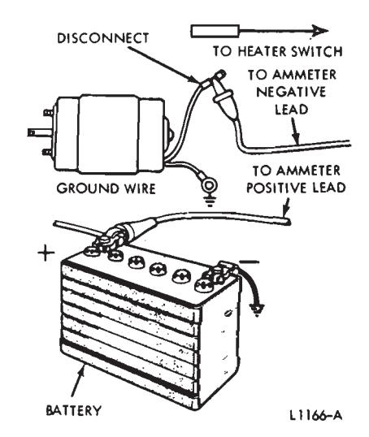
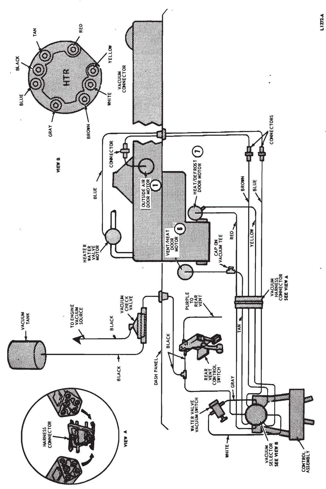
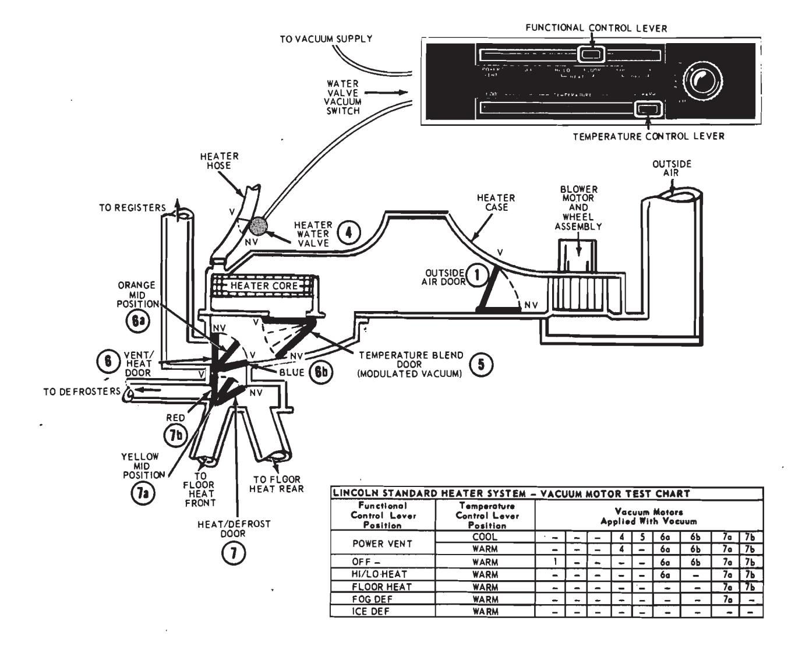
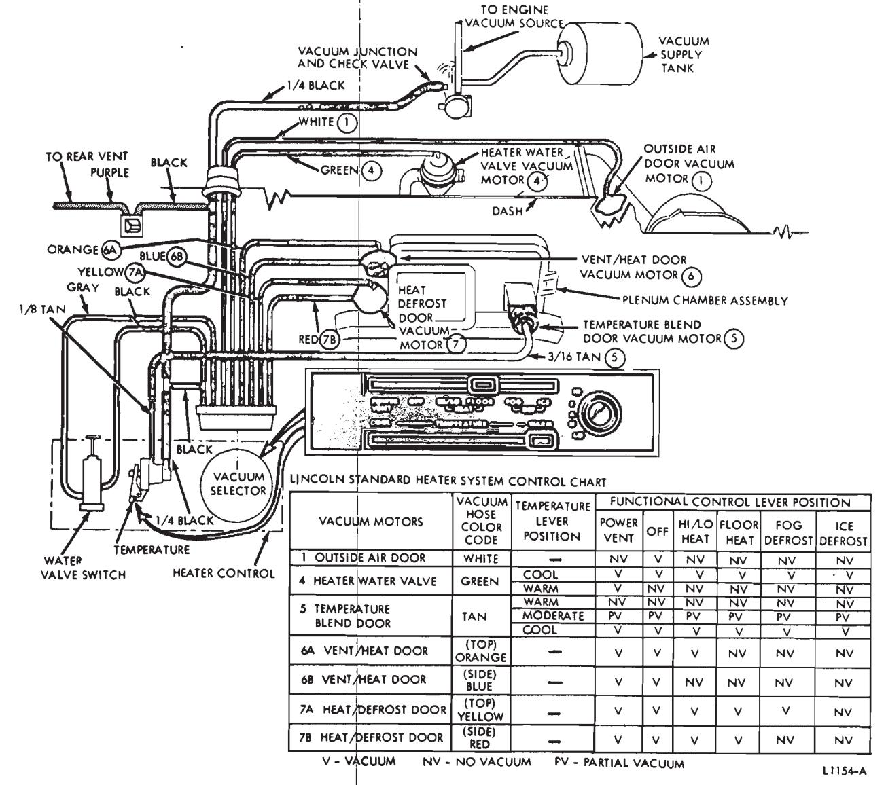
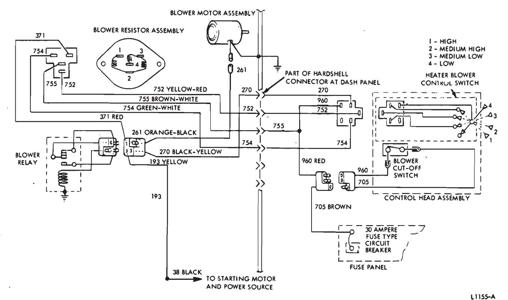

Heating Systems · 34-03-04
The following tests may be made on the heater: Burned out fuses, loose wire connections, damaged wires or collapsed hoses. Loose defroster ducts and air leaks in the body may be determined by visual inspection of the parts.
Heater Blower Motor Current Draw Test
This test will determine if the blower motor is operating properly. Connect a 0-50 ammeter as shown in Fig. 14. The blower motor will operate independently of the control switch, and the current drawn by the motor will be indicated on the ammeter. Current draw should be to specification.
Loose Blower Test
Turn on the heater switch, and listen for the sound of the motor. If only a hum is heard, the blower is loose on the motor shaft.
Blower Switch Test
To check the blower switch, place the switch in the off position. Then using a self-powered test light or ohm meter, check for continuity between all of the terminals, two at a time. If the light should go on, this will indicate a short between the terminals or an inoperative switch.
Open Circuit Test
All electrical circuits must be complete from the source of power (battery), to the unit where the power is used, and back to the source of power again. A check at each connection in a circuit, starting at the battery, will locate an open circuit or will show that the circuit is complete.

Fig. 14 — Heater Motor Current Draw Test
An ohmmeter or self-powered test light connected at any two points of a ||cc|PERATURE|FUNCTIONAL CONTROL LEVER POSITION
(VACUUM CONTROLLED)||||||

Fig. 15 — Heater Control System Vacuum Schematic—Thunderbird and Continental Mark III
|--------------------------------------|--------------------|----------|----------------------------------------------------------|---------------|--------------------|--------|-------------------------------------------------|-------------------------|
|CONTROL
SYSTEM (1)||(BOWI|EVER
DEN CABLE
TROLLED)|POWER
VENT|OFF|HEAT|PARTIAL
DEFROST|FULL
DEFROST|
|FRESH AIR|DOOR POSITION|||OPEN|CLOSED|OPEN|||
|DOOR|BROWN|||NV|VAC.|NV|||
|REGISTER AIR|DOOR POSITION|||OPEN||CL|OSED||
|DOOR|TAN|1||VAC.|||NV||
|HEAT
DEFROST|DOOR POSITION||||FULL
FROST|HEÁT|PARTIAL
DEFROST|FULL
DEFROST|
|DOOR|YELLOW|||NV|||NV
VAC|NV
NV|
|WATER VALVE - E|WATER VALVE - BLUE||OD WARM|OPEN
NV|||OPEN
NV||
|||COOL|-||•|VACUL|UM||
|WATER VALVE|OUTPUT-||WARM
OD|NV|NV-8
SEE NOTE (2)||NO VACU|UM|
|VACUUM SWITCH||COOL||VAC.|NV|VACUUM|||
||SUPPLY-WHITE|||VAC.|NV||VACUU|Λ
|
|TEMPER|ATUDE||WARM|(A)|||PASSES TH|RU HEATER
IES TO (A)|
|BLEND DOOR (BOWDEN CABLE CONTROLLED)||M|OD .|(B)||AROUN|SSES THRU A
ID HEATER
MIXED
APPLIES TO|CORE|
|||COOL||(C)|||BYPASSES
SAME APPL||
|BLOWER SWITCH||||(D)|MAN.
OFF|OFF -|ALLY ON L-
RAM AIR
APPLIES TO||
2 In Off Position Water Valve is Closed by Selector Lever and Overrides Temperature
(1) Colors Indicate Vacuum Hose Color Code
- Low
NV - No Vacuum
- Medium
MOD - Modulated
High VAC- Vacuum
PART - Partial DEF - Defrost
Fig. 16 — Heater Control Positions and Vacuum Application Chart—Thunderbird and Continental Mark III circuit with the power removed from the circuit, will show if the circuit between the two connections is open or complete.
If the meter does not move or has a light movement (high resistance), the circuit may have a poor connection or broken wire. If the bulb does not light, the circuit is open.
If the meter movement is great or full (low resistance), the circuit is complete. If the bulb lights, the circuit is complete.
Plugged Heater Core Test
Start the engine and temporarily remove the outlet hose from the heater core (the hose that leads to the water pump). Very little or no flow of water from one core outlet indicates that the core is plugged. Make certain that water is being supplied to the core inlet.
Heater Control System Testing—Thunderbird and Continental Mark III
Diagnosis of heater problems should be separated into two areas, control system malfunctions and basic heater malfunctions. This phase of diagnosis and testing should be determined before any further diagnosis and testing is performed.
The first step in diagnosis of the control system is to determine which component or components are not operating for the specific control setting. For example: no air from the defrost- er outlets when the upper lever is at full defrost. The vacuum schematic (Fig. 15) and the vacuum application chart (Fig. 16) which covers the vacuum application should be examined.
Once a possible non-operating component is established, the testing of the control system should start at this point and work toward the vacuum source.
When testing the vacuum control system, a minimum of 10 inches of mercury vacuum should be available at all points where vacuum is applied. This can be checked with a Rotunda Fuel Pump Tester Gauge (ARE 345) and two Distributor Tester Hose Adapters (Marked Q) connected together with a coupling. This will allow the Fuel Pump Tester Gauge hose to be adapted to any other vacu- um hose or rubber connector in the vacuum systems.

Failure to maintain 10 inches of mercury vacuum during vacuum system tests could be caused by a bad hose connection, resulting in a vacuum leak. When checking for vacuum between two points, trace the hose along the entire routing to be sure it is not crossed with another hose and connected to the wrong connection.
Standard Heater System—Lincoln Continental
Vacuum Motors
The test chart in Fig. 17 will determine which vacuum motor should be functioning with applied vacuum dur- ing the various functional lever and temperature control lever positions at the standard heater control assembly on the instrument panel. Each vacuum control motor, and the door or valve it operates, has been assigned a code number and name that relates directly to its application in the system as follows:
- (1) Outside Air Door
- (2) Not used in heating system
- (3) Not used in heating system
- (4) Heater Water Valve
- (5) Temperature Blend Door
- (6) Vent/Heat Door
- (7) Heat/Defrost Door
The Outside Air Door (1) vacuum motor arm will travel its full length, closing the Outside Air Door (1), when vacuum is applied.
The Heater Water Valve (4) will close, when vacuum is applied, cutting off the water flow to the heater core.
A modulated vacuum from the temperature regulator valve (Figs. 9 and 18) is supplied to the Temperature Blend Door Vacuum Motor (5). The amount of vacuum increases as the temperature control lever is moved toward the COOL position. The Temperature Blend Door will block the air from the heater core when maximum vacuum is attained.
Where two vacuum lines are used to control one vacuum motor (Vent/Heat (6) and Heat/Defrost (7) Doors) the top vacuum line (a) will move the armature of the motor to the mid or half-way position. Vacuum must also be applied to the side vacuum line (b) to move the arm to the full vacuum position.

Fig. 18 — Standard Heater Control System Vacuum Diagram—Lincoln Continental
Control Lever Tests
Temperature Control Lever
With the temperature control lever (lower lever) in COOL position, the Temperature Blend Door (5) restricts air through the heater core (vacuum). the Heater Water Valve (4) is closed (vacuum) and cool air is discharged through the registers, floor outlets or defrosters. As the lever is moved toward WARM the water valve vacuum switch is released and the Heater Water Valve (4) is opened (no vacuum except when the function lever is in POWER VENT position), the Temperature Blend Door (5) is modulated (partial vacuum) allowing air through the heater core to be mixed with cool air and discharged through the heater plenum outlets. In the WARM position (no vacuum), all the air passes through the heater core to provide maximum discharge air temperature. Refer to Vacuum Motor Test Chart, Fig. 17, and Vacuum Diagram, Fig. 19.
Functional Control Lever
In POWER VENT COOL position the Heater Water Valve (4) is closed (vacuum), the Vent/Heat Door (6) in the plenum chamber restricts air to the floor outlets (vacuum) and the air is discharged through the registers (Fig. 17).
In OFF position the Outside Air Door (1) is closed with vacuum, and the blower is off. The door is open (no vacuum) in all other control positions and electrical current is supplied to the four position blower switch through a micro-switch (blower cutoff switch) on the control assembly (Fig. 9).
 Fig. 9 — Standard Heater Control Assembly—Lincoln Continental
Fig. 9 — Standard Heater Control Assembly—Lincoln Continental
In HI/LO HEAT position the Vent/Heat Door (6) is in the mid position (6a vacuum), the Heat/Defrost Door (7) is in the heat position (7a and 7b vacuum), and air is discharged both through the registers and floor outlets
In FLOOR HEAT position the Vent/Heat Door (6) restricts air to the registers (no vacuum), the Heat/Defrost Door (7) is in the heat position (7a and 7b vacuum) and air is discharged through the floor outlets in the air distribution duct and through the rear floor outlets.
In DEFOG position the Vent/Heat Door (6) restricts air to the registers (no vacuum) the Heat/Defrost Door (7) is in the mid position (7a vacuum) and air is discharged both through the defroster nozzles and floor outlets.
In DEICE position the Heat/Defrost Door (7) restricts air to the floor outlets (no vacuum) and all air is discharged through the defroster nozzles with only a bleed to the floor.
Blower Motor Controls
A blower cut-off (Micro) switch, a four position blower control switch, the blower relay and the blower resistor assembly are combined to provide four blower speeds to control air volume in all functional control lever positions except OFF (Fig. 19).
When the functional control lever is moved from the OFF position the blower cut-off (Micro) switch closes providing electrical current to the blower control switch selector arm and also the No. 4 spade pin of the blower resistor assembly. The electrical current then flows through the three resistors to the No. 1 spade pin of the blower resistor assembly.
The No. I spade pin of the blower resistor assembly is connected to the normally closed side of the blower relay contacts. Electrical current to the blower motor assembly is transmitted through the normally closed side of the blower relay contacts in all blower control switch positions except HIGH.

Fig. 19 — Standard Heater Electrical Schematic—Lincoln Continental
In the LOW blower control switch position, electrical current flow is through all three resistors of the blower resistor assembly. The electrical current is provided directly from the blower cut-off switch and not the blower control switch.
In the MED. LOW blower control switch position, electrical current comes from the blower control switch to the No. 3 spade pin of the blower resistor assembly and also from the blower cut-off switch to the No. 4 spade pin. In this position the resistor between the No. 3 and No. 4 spade pins of the blower resistor assembly is not being used because the electrical current will flow through the least amount of circuit resistance.
In the MED. HIGH blower control switch position, electrical current comes from the blower control switch to the No. 2 spade pin of the blower resistor assembly and also from the blower cut-off switch to the No. 4 spade pin. in this position, only the resistor between the No. 2 and No. 1 spade pins is being used in the circuit.
When the blower control switch is in the HIGH position, the electrical current from the blower control switch is then applied to the coil of the blower relay. The relay coil then pulls the moveable blower motor assembly contact away from the blower resistor assembly contact and applies it directly to the starting motor and power source. The electrical current is then supplied directly to the blower motor assembly from the battery with the least amount of circuit resistance.